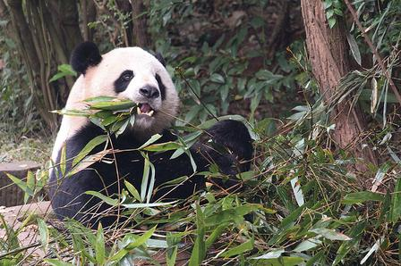
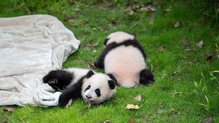

国宝家园

成都大熊猫繁育研究基地
位于成华区，是世界著名的大熊猫迁地保护基地。在这里，你可以近距离观察到憨态可掬的大熊猫，还有刚出生不久的熊猫幼崽，是来成都必打卡的景点。

都江堰熊猫谷
相比于繁育基地的人山人海，位于都江堰的熊猫谷环境更为清幽。这里主要进行大熊猫的野化放归训练，同时还能看到可爱的小熊猫在林间自由穿梭。

位于成华区，是世界著名的大熊猫迁地保护基地。在这里，你可以近距离观察到憨态可掬的大熊猫，还有刚出生不久的熊猫幼崽，是来成都必打卡的景点。

相比于繁育基地的人山人海，位于都江堰的熊猫谷环境更为清幽。这里主要进行大熊猫的野化放归训练，同时还能看到可爱的小熊猫在林间自由穿梭。